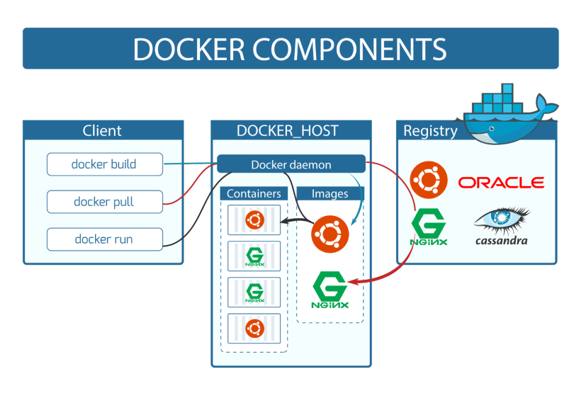

O que é o Docker?
O Docker é uma plataforma de virtualização de contêiner de código aberto que simplifica a criação, o gerenciamento e a execução de aplicativos em ambientes isolados conhecidos como contêineres. Ele oferece um ambiente controlado e independente para empacotar aplicativos e suas dependências, permitindo que eles sejam executados de maneira consistente em qualquer sistema que suporte o Docker. Isso resulta em maior eficiência no desenvolvimento, escalabilidade, portabilidade e simplifica a gestão de dependências, tornando o Docker uma ferramenta valiosa para desenvolvedores e equipes de desenvolvimento.
Por que usar o Docker:
- Isolamento de Aplicativos: O Docker permite isolar aplicativos e suas dependências em contêineres, garantindo que eles não interfiram uns nos outros. Isso evita conflitos de bibliotecas e ambientes e simplifica o gerenciamento de dependências.
- Portabilidade: Os contêineres Docker são portáteis e podem ser executados em qualquer sistema que suporte o Docker. Isso significa que você pode criar um ambiente de desenvolvimento em sua máquina local e implantá-lo em servidores de produção com confiança, mantendo a consistência.
- Eficiência no Desenvolvimento: Com o Docker, você pode empacotar um aplicativo e todas as suas dependências em um único contêiner, o que simplifica a configuração e o compartilhamento de ambientes de desenvolvimento com outros membros da equipe.
- Escalabilidade: O Docker facilita a escalabilidade de aplicativos, permitindo a rápida criação de réplicas de contêineres em ambientes de produção, o que é fundamental para atender a demandas variáveis de carga.
- Facilidade de Implantação: O Docker oferece uma maneira consistente de implantar aplicativos em diferentes ambientes, tornando a implantação e o gerenciamento de aplicativos mais previsíveis e confiáveis.

Na imagem acima, é possível notar a diferença entre máquinas virtuais e Docker. Essa nova arquitetura simplifica significativamente o uso de recursos e a sobrecarga do sistema ao configurar e distribuir aplicações, independentemente do provedor de hospedagem. A principal vantagem dessa arquitetura é a eliminação da necessidade de hardware adicional para o sistema operacional hospedeiro, já que tudo é tratado como contêiner.
Componentes do Docker
Os componentes do Docker são os elementos-chave que constituem o ecossistema do Docker e permitem a criação, execução e gerenciamento de contêineres. Esses componentes incluem:
Docker Daemon
O Docker Daemon é um serviço que roda em segundo plano no sistema hospedeiro. Ele é responsável por criar, executar e gerenciar contêineres. Os clientes do Docker se comunicam com o Docker Daemon para realizar ações, como criar ou parar contêineres.
Docker Client
O Docker Client é a interface pela qual os usuários interagem com o Docker. Os usuários enviam comandos para o Docker Client, que, por sua vez, os encaminha para o Docker Daemon. Esses comandos podem ser executados na linha de comando ou por meio de APIs.
Imagens Docker
As imagens Docker são modelos de sistema de arquivos somente leitura usados para criar contêineres. Elas contêm todos os recursos necessários para executar um aplicativo, incluindo código, bibliotecas e dependências. As imagens são a base para a criação de contêineres.
Contêineres Docker
Os contêineres Docker são instâncias em execução de imagens. Eles contêm o aplicativo e seu ambiente isolado, incluindo sistemas de arquivos, variáveis de ambiente e configurações. Os contêineres são leves, portáteis e podem ser implantados de maneira consistente em vários ambientes.
Docker Hub
O Docker Hub é um repositório público onde você pode encontrar, compartilhar e distribuir imagens Docker. Ele é uma fonte central de imagens prontas para uso, permitindo que os usuários acessem e compartilhem facilmente imagens Docker.
Esses são os principais componentes do Docker que trabalham juntos para simplificar o desenvolvimento, distribuição e execução de aplicativos em contêineres. Eles oferecem uma solução eficiente e escalável para empacotar e implantar aplicativos, além de fornecer isolamento e portabilidade.
